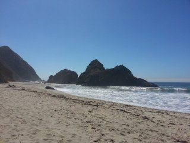
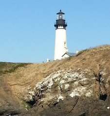
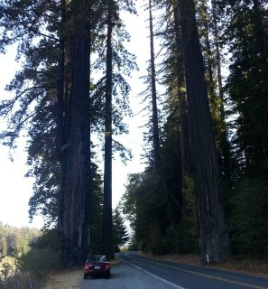

West Coast Attractions
The West Coast is brimming with many attractions, and you can be sure to find something for everyone. Here we highlight a few of the most popular attractions along the coast.
Beaches Along the Coast
 When it comes to beaches, the West Coast is in no short supply. Whether you are looking for a private oasis to relax, surf, camp or a place with plenty of fun close at hand, we can help you find the right beach for you. Oh! And don’t forget about your four legged friend, the coast also has dog friendly beaches, some with off-leash privileges!
What to Expect:
The coast can vary in climate, by time of day, time of year and location along the coast. You should be prepared for anything that nature can send your way. During early spring, you may still find icicles along the beach cliffs in the northern range, be sure to dress warmly.
Lighthouses
 Along the many miles of beaches, you’ll find that the West Coast is home to dozens of lighthouses. If you happen to be a lighthouse aficionado, then this is the place for you! You can find more information on the lighthouses that call the West Coast home at NWcoast and at Light House Friends.
What to Expect:
During the warmer months the parks can become crowed and in many instances parking will be limited at many sites. If you are willing to add to the adventure, many places have wonderful hiking trails that will get you to the lighthouses and back, without having to deal with much traffic. Also, yearly upkeep of the lighthouses might make some of them unavailable to the public, make sure you check availability before you go.
The Valley of the Giants
 These behemoths call the West Coast home too, and can reach heights of 379 feet with a diameter up 29 feet. Come, take a walk with them and enjoy the pleasant sounds of the forest. Scattered throughout the coast you will find many state parks where these majestic creatures dwell.
What to Expect:
One of the reasons that these giants can get so big is the amount of precipitation that they get throughout the year, up to 200 inches! Be prepared for a bit of rain, or several hours of foggy weather during spring and autumn months. During the summer months fire bans will be in place in most southern range parks along the coast, especially in drought stricken areas, please be sure to observe these bans, after all, we would like to keep these giants around for another 2100 years.